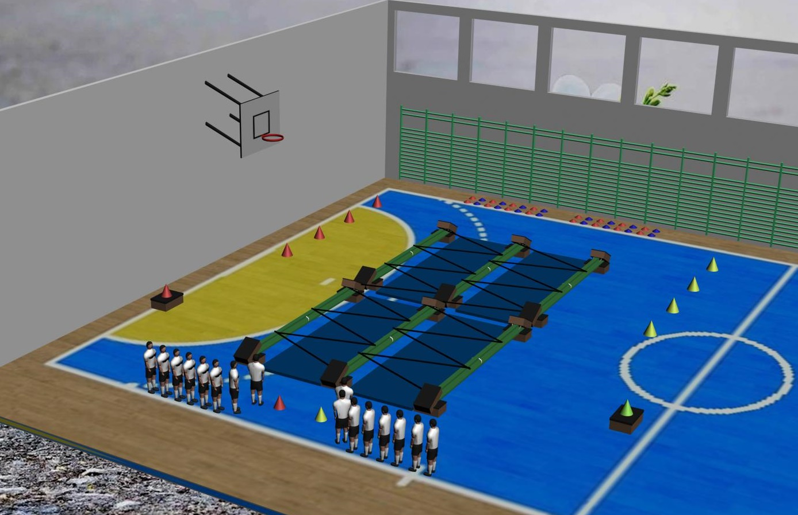
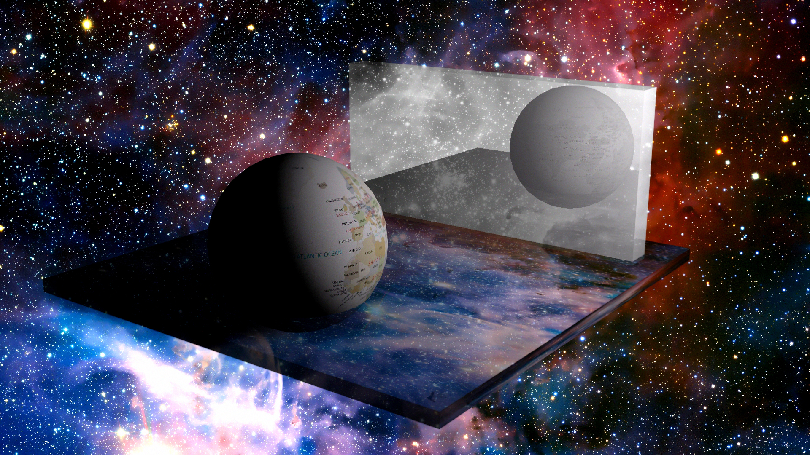
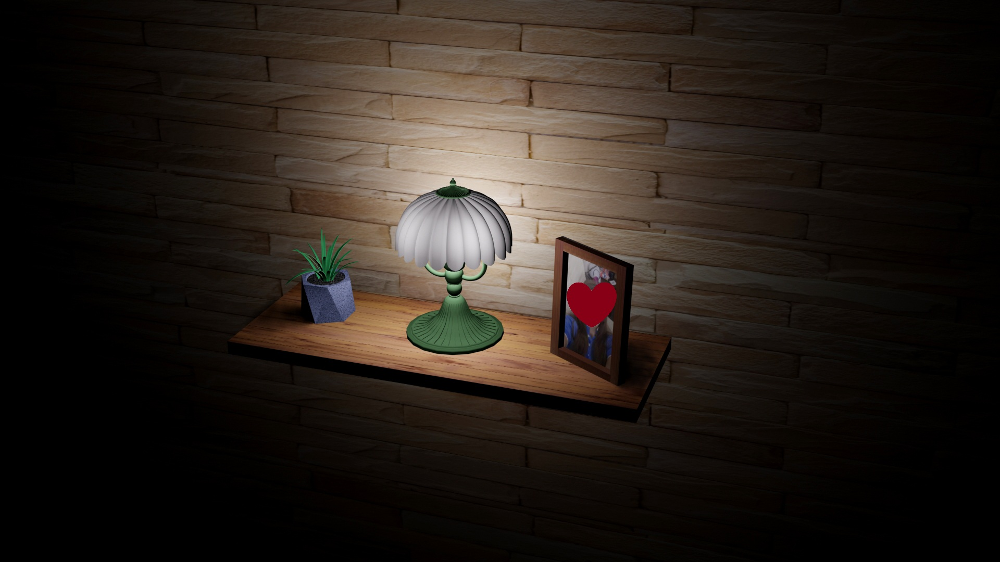
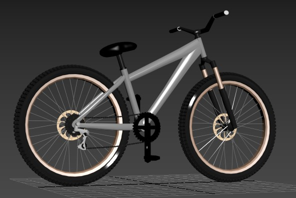
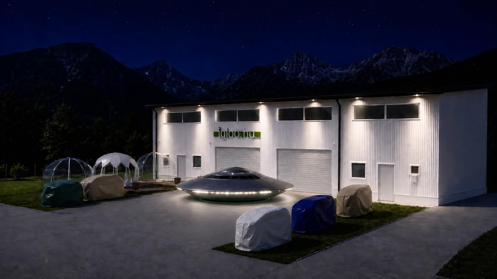
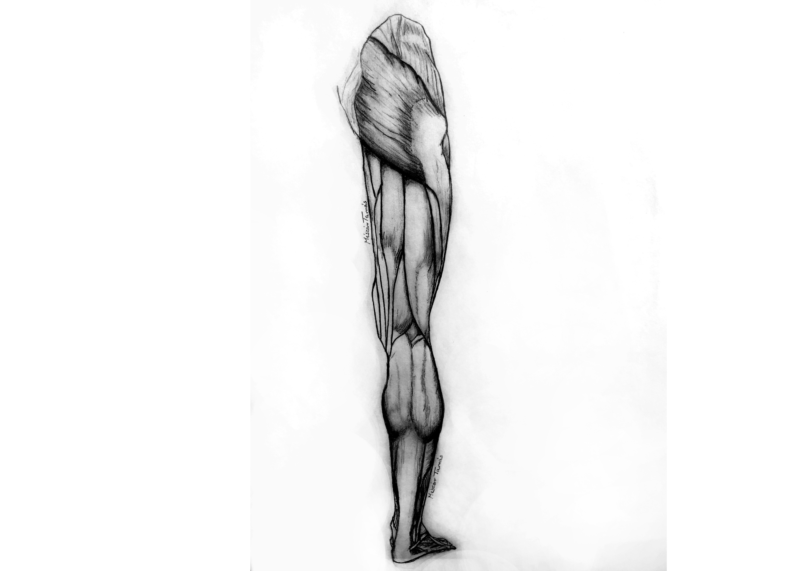

Köszöntő
KÖSZÖNTELEK A KREATÍV VILÁGOMBAN!
Éljük át közösen az alkotás örömeit!
CREATIVITY • DESIGN • 3D ART
NÉZZ SZÉT ÉS VÁLOGASS KEDVEDRE

Edzéstervek & Óravázlatok
Testnevelő-edzőként tevékenykedsz?
A tervszerű, tudatos pedagógiai folyamat egyik legfontosabb része az óravázlat készítés. Sokan megmaradnak az egyszerű rajzírás elkészítésénél, azonban sokkal részletesebb és kreatívabb óravázlatot készíthetünk 3D-s tervező programok segítségével. Haladóbb felhasználók már animációkat is tudnak készíteni, amit a diákok rendkívül nagy érdeklődéssel követnek figyelemmel a gyakorlati órákon. A szakedzőknek ma már számtalan, erre a célra fejlesztett alkalmazás áll a rendelkezésükre, amit kötelező jelleggel kell használjanak.

Elvontabb alkotások
Bátran kísérletezz!
Sokszor nem tudhatjuk, hogy egy-egy céltalannak tűnő kísérletezésnél milyen érdekes alkotások születhetnek. Nem mindig a legszebb és legigényesebb művek megalkotása közben fejlődünk a legnagyobb mértékben. Tökéletesen igaz ez a 3D-s tervezés esetében, amikor egy borzasztóan esztétikátlan objektumot hozunk létre, mindeközben mégis újabbnál újabb funkciókat, megjelenítési módokat vélünk felfedezni. Ezeket a felfedezéseket már a komolyabb objektumok megalkotásánál magabiztosan és hatékonyan tudjuk alkalmazni.

Tárgyak & Objektumok
Másolj le minél több objektumot!
Kezdő felhasználóként még nincs minden tudás a birtokodban, hogy újat alkoss. Emiatt egy másodpercig ne szomorkodj! Alkotni nem csak újat lehet és a leghatékonyabb tanulási módszerek egyike a másolás. Előtted van a tolltartód, vagy egy gyönyörű virág? Alkosd meg! Próbáld meg részletesen lemásolni, miközben megpróbálsz tényleg figyelni az arányokra. Legjobban így tudod megjegyezni az objektumok geometriáját. Fejlődik a térbeli tájékozódás, a méretek és arányok érzékelése, valamint annak képessége, hogy valaki háromdimenziós formákban gondolkodjon.

Szerelés tervszerűen
Javítási munkád ne bízd a véletlenre!
Hajlamosak vagyunk a régi tárgyainktól, eszközeinktől azonnal megválni, ha az elromlik. Mégis mi lenne akkor, ha a meghibásodott eszközt mi magunk próbálnánk megjavítani? Itt is nagy segítségünkre lehet a 3D-s program használata. Tervezés során folyamatosan döntéseket hozunk, felismerjük a hibákat és megoldásokat kezdünk keresni. Ez a tevékenység fejleszti az elemző és rendszerező gondolkodásunkat. A 3D tervezés egyszerre fejleszti a kreativitást, a logikus gondolkodást, a problémamegoldást és az önálló alkotás képességét.

Precizitás a munkában
Teremts értékeket munkahelyeden!
A 3D modellezés lehetővé teszi a raktárterület pontos és átlátható megtervezését. Segítségével előre megjeleníthetők a polcrendszerek, tárolóhelyek, közlekedési útvonalak és munkaterületek. A digitális modell segítségével optimalizálható a helykihasználás. A különböző elrendezések előzetesen kipróbálhatók anélkül, hogy a valóságban költséges átalakításokat kellene végezni. A 3D modellezés hozzájárulhat a targoncák és dolgozók biztonságosabb közlekedéséhez, valamint a munkafolyamatok gyorsításához.

Az Emberi Anatómia
Ismerd meg szervezeted felépítését!
Lehetővé teszi az emberi test és a belső szervek térbeli, részletes megismerését. Segítségével könnyebben megérthetők a csontok, izmok, szervek és szervrendszerek egymáshoz való kapcsolódásai. A háromdimenziós modellek különböző nézőpontokból vizsgálhatók, forgathatók és nagyíthatók, így szemléletesebbé válik az emberi test felépítése. Segítségével a tanulás élvezetesebbé és könnyebben érthetővé válik, mint a kizárólag kétdimenziós ábrák használatával.